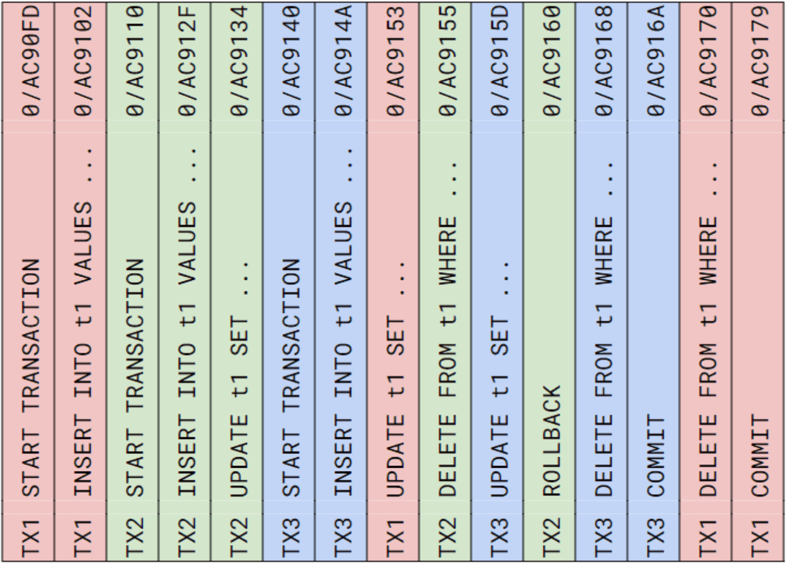
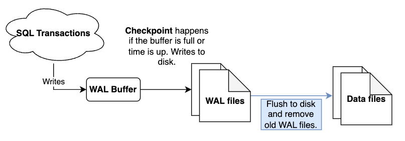
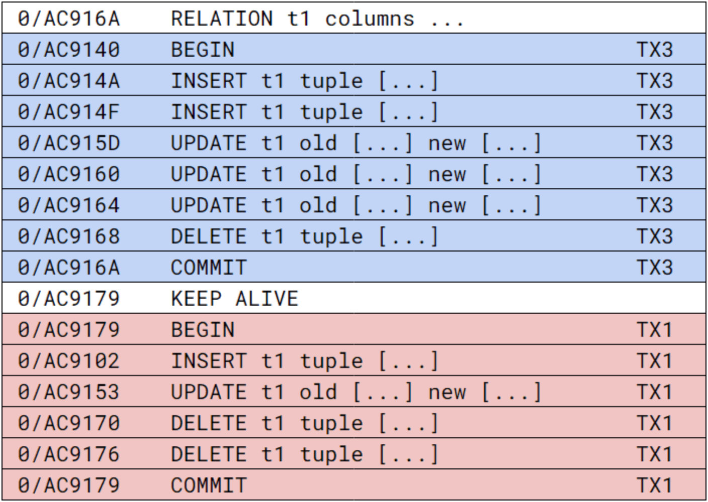
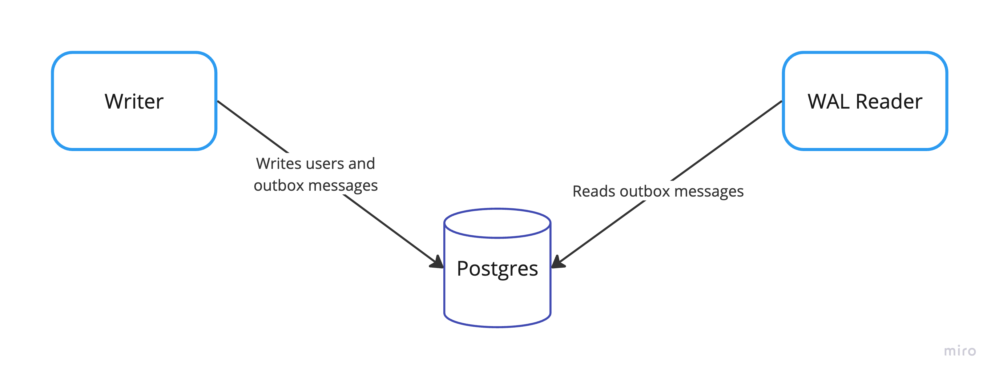
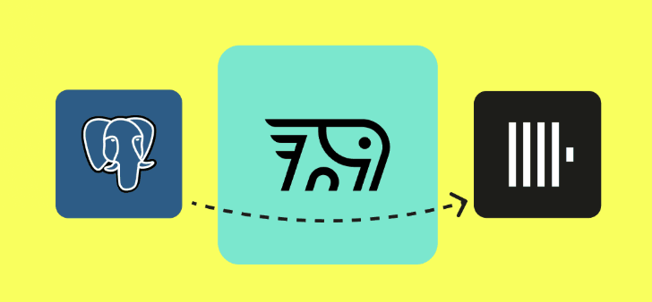

Postgres logical replication & PeerDB
Helsinki Gophers meetup
18 Mar 2025
Types of Headaches
About me
Senior software engineer
Pre-owned project at Zalando Helsinki
C → Java → Kotlin → Go
Author of pgx-outbox library
PostgreSQL
Reliable and feature-rich
Open-source, strong community
Very permissive license
Why replicating data?
Syncing to a read replica
Streaming to a messaging system
Ingesting to another database
Replication scenarios

Replicating how?
Batch export
Physical replication (WAL)
Logical replication (WAL)
Batch export
pg_dump and pg_restore
COPY TO / FROM
not real-time, high load, slow
Write-Ahead Log

WAL
Physical replication
Fast, but requires compatibility
Exact copy of the primary
Schema (DDL) + data changes (DML)
Write-Ahead Log shipping
Logical replication
Table-level, not full database
Write-Ahead Log decoding
Captures row changes (DML):
INSERT, UPDATE, DELETE, TRUNCATE
More flexible, but more complex
pgx driver
most popular Go driver
by Jack Christensen @jackc
11.5K stars on GitHub
jackc/pglogrepl
decodes logical replication messages
includes a basic example
350 stars, 170 users
not actively maintained
Publication
CREATE PUBLICATION pub1 FOR TABLE t1, t2;
CREATE PUBLICATION pub2 FOR ALL TABLES;
-- WITH (publish = 'insert, update', 'delete', 'truncate');
SELECT * FROM pg_publication;
query := "CREATE PUBLICATION pub1 FOR TABLE t1"
result := conn.Exec(ctx, query) // low level *pgconn.PgConn
defer result.Close()
_, err := result.ReadAll()
Replication slot
SELECT pg_create_logical_replication_slot('slot', 'pgoutput');
-- temporary slot is automatically dropped when connection is closed
SELECT pg_create_logical_replication_slot('tmp_slot', 'pgoutput', true);
SELECT * FROM pg_replication_slots;
pglogrepl.CreateReplicationSlot(ctx, conn, "tmp_slot", "pgoutput",
pglogrepl.CreateReplicationSlotOptions{Temporary: true})
Logical decoding plugins
pgoutput - built-in, default
test_decoding - built-in, only for testing
wal2json - 3rd party, produces JSON
decoderbufs, pglogical
Plugin arguments
pluginArguments := []string{
"proto_version '2'", // versions 3 and 4 are not supported
fmt.Sprintf("publication_names '%s'", "pub1"),
"messages 'false'", // pg_logical_emit_message() is not used
"streaming 'false'", // receive only committed transactions
}
Start replication
START_REPLICATION SLOT tmp_slot LOGICAL 0/16B4F20
("proto_version" '2',
"publication_names" 'pub1',
"messages" 'false',
"streaming" 'false');
sysIdent, err := pglogrepl.IdentifySystem(ctx, conn)
pglogrepl.StartReplication(ctx, conn, "tmp_slot", sysIdent.XLogPos,
pglogrepl.StartReplicationOptions{PluginArgs: pluginArguments})
Message loop
for {
var rawMsg pgproto3.BackendMessage
rawMsg, err := conn.ReceiveMessage(ctx)
switch msg.Data[0] {
// XLog is historical name for WAL
case pglogrepl.XLogDataByteID: // 'w'
err = r.handleXLogData(msg.Data[1:]) // actual data
case pglogrepl.PrimaryKeepaliveMessageByteID: // 'k'
err = r.handlePrimaryKeepalive(msg.Data[1:])
}
}
Transactions again
Replication data
Handle data
func handleXLogData(data []byte) error {
xld, err := pglogrepl.ParseXLogData(data)
logicalMsg, err := pglogrepl.ParseV2(xld.WALData, false)
switch msg := logicalMsg.(type) {
case *pglogrepl.RelationMessageV2:
// remember table structure: column names and types
r.relations[msg.RelationID] = msg
case *pglogrepl.InsertMessageV2:
var raw map[string]interface{}
raw, err = r.handleInsert(msg)
}
Handle inserts
func handleInsert(msg *pglogrepl.InsertMessageV2)
(raw map[string]interface{}, err error) {
for columnIdx, col := range msg.Tuple.Columns {
column, err := r.getRelationColumn(msg.RelationID, columnIdx)
switch col.DataType {
case 'n': // null
raw[column.Name] = nil
case 't': // text
val, err := r.decodeTextColumn(col.Data, column.DataType)
raw[column.Name] = val
}
}
}
pgx-outbox WAL
pglogrepl wrapper to read only INSERTs
func NewReader(connStr, table, publication, slot string) (*Reader, error)
// type RawMessage map[string]interface{}
func (r *Reader) Start(ctx) (<-chan RawMessage, <-chan error)
Demo
PeerDB
efficient data streaming from Postgres
written in Go (and Rust)
uses Temporal orchestration engine
open-source, Elastic License 2.0 (ELv2)
PeerDB
Y-combinator 2023
acquired by ClickHouse
integrated to ClickPipes